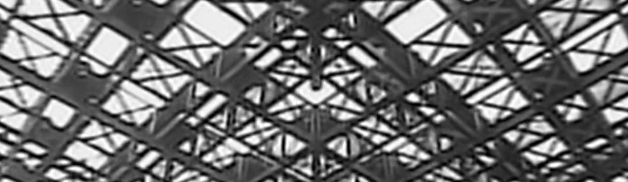

Insecticide

we wake up as the sun rises, him a few minutes before me. he's spitting toothpaste into grass outside when i open my eyes. i kill the car and it's an uncomfortable quietness now, no birds or wind or the humming of an air conditioner unit, just him standing, back turned to the car.
morning.
mm.
how's the arm?
wet.
does it still hurt? is it warm or anything? or a little swollen?
nope it's all good.
do you want me to replace it? the bandaging i mean. i still have some spare. it's deep enough that you have to get it changed every day.
nope.
are you sure? it's really no big deal. and you should get it changed.
yeah.
he doesn't look at me as we head back into the car. when we're in he sits down, wordlessly takes the tape off the wire ends and touches them back together, and then we just drive back.
the roads are always straight. they don't bend or curve. they are dead on, unflinching, a solid black streak cutting through earth. there are no potholes or cracks or bumps along the edges. there are no markings on the sides. there are no signs hammered into the grass, no You Are Five Miles Away From The City, no traffic lights, no other cars. the road has nothing a road has. all it has is itself, and itself is a profound, unending amount of nothing. it will take around 45 minutes to get back, and when we get back to the city there will be something, but that something is nothing all the same, a something built and centered around nothing, a thin curtain of something hanging impossibly around an invisible nothing, a tarp stretched over a hole in the ground like skin on a drum. empty people in empty rectangles. he sits calmly, motionless in the shotgun seat, saying nothing and looking at nothing, maybe thinking nothing. i don't know. i've never known what he's thought.
is something the matter?
no.
you just seem a little quiet. like something's bothering you.
mm. just tired.
okay. if you're sure.
i'm sure.
okay.
i'm a little sick.
should i slow down? do you want to roll the windows down?
not that kind of sick.
do you want me to stop talking?
hmm. no.
okay. i'll. just talk at you then.
sure.
so. umm. you know actually when i first saw you i was headed back home, i didn't go outside often but i happened to be, just coincidentally again, and you were walking around the borders which i thought was interesting because no one ever really walks there, and i recognized the scent of something, like, gas. you must've had it in your bag and you stunk of it. and you stick out a lot here, what with your outfit and the smell and your general, demeanor, like that look in your eyes. i don't know how you didn't see me earlier. i followed you a while, i hung back around fifty metres or so. i still can't really explain why i followed you. i just thought you were like something i'd never seen before, and i wasn't doing that well that night, and so i figured i needed to do something to get my mind off it all, and a little part of me thought maybe you were some delusion i was having. but you were real, of course. and you walked into that alley, right, the alley with the grass - i never knew alleys could have grass here, that was new to me. you spend your whole life in this place and only after like fifteen or sixteen years do you realize this one alley has grass in it, right? it's what it does to you. but then you started burying it, this bird you just took out from your backpack so naturally like it was any kind of tool or implement or even like a water bottle, and then you just started doing this thing in the middle of everything with no one around to see. this completely alien act. sure i've heard of burial before but i was just drawn to the way you started on it like it was nothing. i dunno. i haven't talked to many people of course but i knew there was something especially eccentric about you, and i figured i wanted to know more about that. and now here we are.
you still think i'm weird?
yeah. but now i know why, so it makes sense. it's like i took the face off the clock and i'm staring at the mechanism under and it's still vast and inexplicable. but i get how the gears move now.
i'm a watch?
sure. sure you're a watch.
hmmm.
well like. you understand what i mean. right? i don't know. really i'm just talking to talk here.
mm. you can keep talking to talk.
thanks for the permission. okay. but i hope you don't think i'm strange or anything. for stalking you, basically. i just had nothing to do, right, and i was bored and coming apart a little. and there's really not much to do at my house except stare at the walls or eat or think.
staring at the walls is thinking.
in a sense. you know. i'm surprised by how easy this driving shit is. like it's really not hard. just keeping the wheel straight. i guess it helps that the road is so smooth and that it's. well, like this. i don't need to worry about curves and stuff.
was harder to steal it.
that wasn't hard either honestly. i think you could do this really easily. driving the car that is, or, our car i guess.
that alley didn't have grass in it before i was there.
really? you did that?
took a while yeah. no one goes there so no one bothered me.
how'd you do it?
just stole some power tools. took like a year of work.
that's cool. i mean this is what i mean right. that's an eccentric thing to do but it's interesting.
did it so i could bury the birds easier.
you ever see one? alive?
in my dreams, sometimes.
the city comes back again, and the sky grays over, and i can't see the sun out of the windows anymore. it takes around ten minutes for me to drive him back to his place, and as we do he takes his bag out from the backseat and opens the door and without looking at me he stops just before he gets out and says
i had a dream about you.
and before i can say anything the car door shuts behind him and it's just me in our car now, he vanishes into the apartment building, it's a three minute drive now back to my own apartment, and i think about what he said, thinking out loud, holding this dialogue with the car's static, inhuman hum, he dreamt about me? and i ask myself all these questions, what was the dream about, is that why he seemed upset, all these questions that i know the answers to already, but you need some time to deny it, give your body time to produce the bile it's going to vomit out later, and so when i head back into my apartment after the three-minute drive enough time has passed and enough meaningless questions have been asked that i can throw up into my toilet, rinse my mouth out, go to bed.